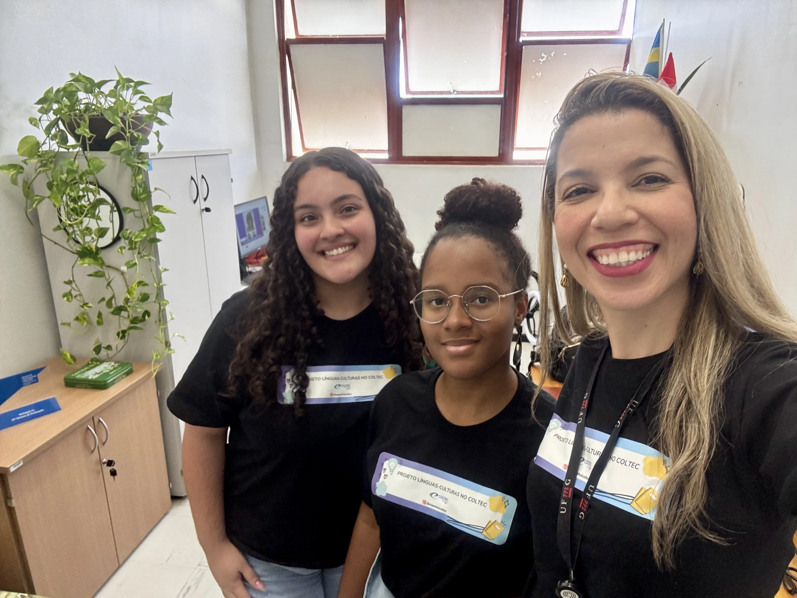

.jpeg)
.jpeg)


Projeto e equipe
“A ilha desconhecida fez-se enfim ao mar, à procura de si mesma.”
Nossa missão
O projeto Línguas-Culturas promove o ensino de línguas estrangeiras por meio de ações extensionistas, pesquisa e formação docente, aproximando diferentes culturas da comunidade.
Sobre o Línguas-Culturas
Línguas são também formas de conhecer o mundo.
O Línguas-Culturas é um projeto de ensino, pesquisa e extensão desenvolvido no COLTEC-UFMG. Por meio de oficinas gratuitas, aproxima estudantes de diferentes línguas e culturas e cria espaços de experimentação, expressão e troca de experiências.
Além das aulas de espanhol, francês, grego antigo, italiano, japonês, latim e mandarim, o projeto produz materiais didáticos, exposições, vídeos e pesquisas, ao mesmo tempo que contribui para a formação inicial e continuada de professores.
- 7idiomas e culturas em diálogo
- 3 frentesensino, pesquisa e extensão
- COLTEC · UFMGeducação pública e colaboração

Coordenação
Fernanda Peçanha Carvalho
Coordenadora do projeto Línguas-Culturas
Doutora e mestra em Linguística Aplicada pela Universidade Federal de Minas Gerais, com estágio pós-doutoral pela Universidade Federal de Ouro Preto (2024). É licenciada em Letras — Língua Portuguesa e Língua Espanhola — pela FALE-UFMG e professora de Língua Espanhola do COLTEC.
Sua atuação reúne internacionalização do conhecimento, políticas linguísticas, letramento digital, multiletramentos e formação docente. Coordena o projeto de extensão Línguas-Culturas no COLTEC-UFMG (SIEX 404268), articulando ações inovadoras de ensino de línguas, pesquisa e formação inicial e continuada de professores.
Currículo LattesEquipe
Quem faz acontecer
Uma equipe multidisciplinar formada por docentes, estudantes e colaboradores que constroem coletivamente as ações do projeto.